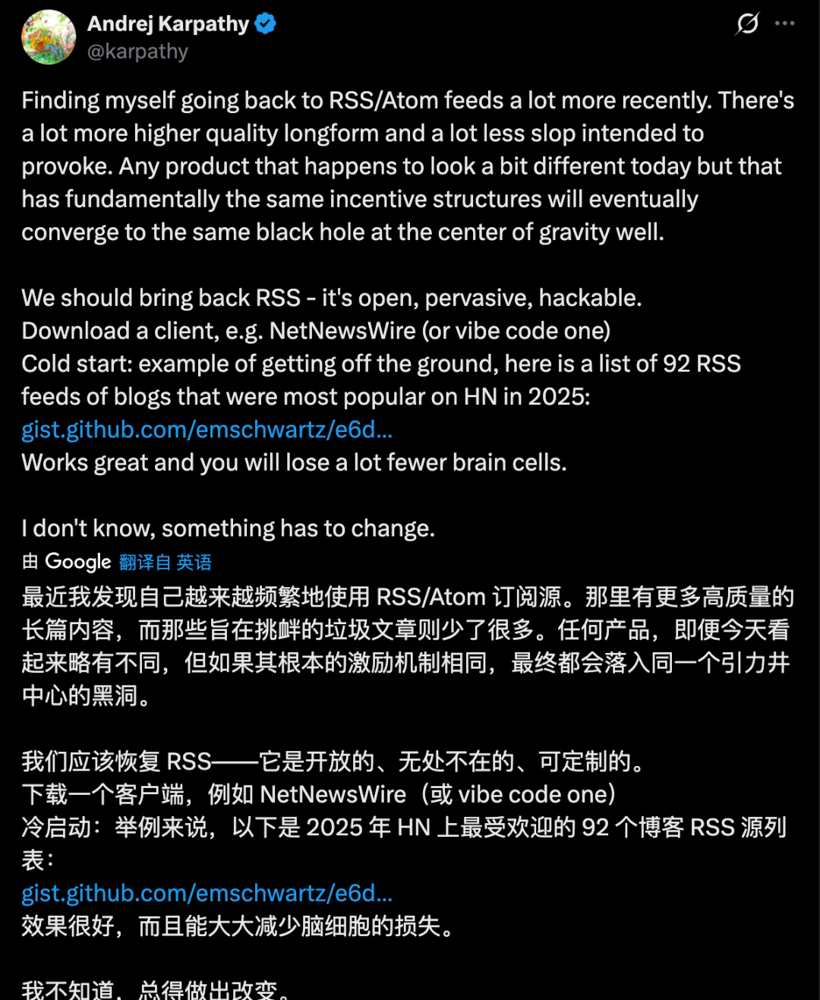
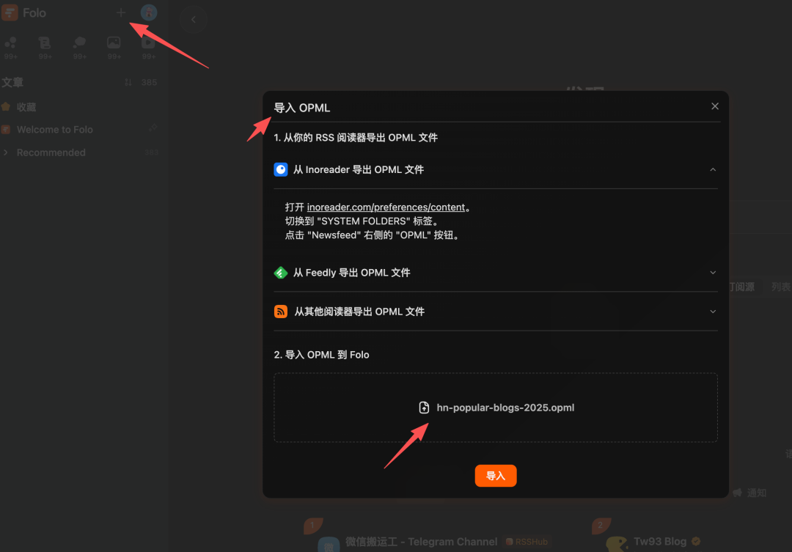
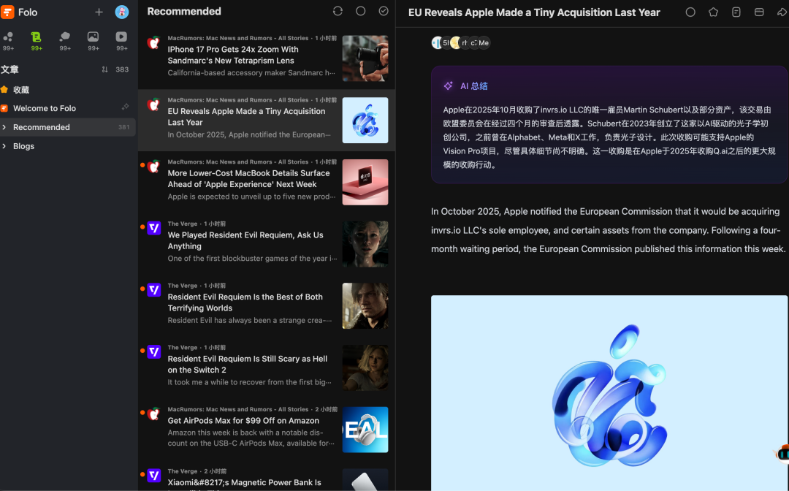

大家好，我是在做ai产品的良逍。
前几天刷推的时候看到Andrej Karpathy发了一条很有意思的推文。

如果你不认识他——他是前特斯拉AI总监、前OpenAI创始成员，在AI领域大概属于"说一句话整个圈子都会转发"的那种人。
他说，自己最近越来越多地在用RSS/Atom订阅源来获取信息。
原话的意思大概是：RSS上有更多高质量的长篇内容，而那些靠标题党、情绪化吸引点击的垃圾文章少了很多。任何产品，不管今天看起来多不同，只要底层的激励机制是一样的，最终都会走向同一个方向。
翻译成大白话就是：社交媒体的算法只会喂你想看的东西，刷着刷着就变成信息茧房了。
这一点我深有体会。你有没有发现，刷抖音、刷小红书、刷推特，看到的内容越来越同质化？算法觉得你喜欢什么就拼命给你推什么，但你真正需要的深度内容、前沿信息，反而越来越看不到了。
RSS不一样。你订阅了谁就看谁的内容，没有算法干扰，没有广告插入，信息获取的主动权完全在你自己手上。
Karpathy分享了什么
他不光说了RSS好，还顺手分享了一份文件：92个Hacker News上最受欢迎的技术博客RSS源，打包成了一个OPML文件。
这92个博客包括什么呢？随便列几个你可能认识的：
• Paul Graham——YC创始人，硅谷教父级人物，他的博客文章篇篇经典 • Simon Willison——Django框架联合创始人，现在是AI工具领域最活跃的技术博主之一 • Krebs on Security——全球最顶级的网络安全博客 • Daring Fireball——Apple生态里最有影响力的独立评论
全都是长期输出深度内容的一线大佬。这份信源清单的含金量，可以说相当高了。
但很多人卡在了导入这一步
Karpathy把文件放在了GitHub Gist上，很多人看到之后的反应是：
"OPML是什么？"
"下载了不知道怎么用。"
"需要什么阅读器？"
所以我把整个流程跑了一遍，发现其实非常简单，3步就能搞定。
第1步：下载OPML文件
OPML是RSS订阅源的打包格式，你可以理解为一个"关注列表"的导出文件。导入一次，就相当于批量关注了92个博客。
下载方式：打开GitHub Gist，搜索 emschwartz，找到 hn-popular-blogs-2025.opml 这个文件，点击Raw按钮下载即可。国内可以直接访问，速度也还行。
我也把文件上传到了网盘，链接放在文末，方便大家直接下载。
第2步：下载Folo阅读器
有了OPML文件，你需要一个RSS阅读器来导入。我用的是Folo（folo.is），推荐的原因有几个：
开源免费——完全不花钱，没有订阅制，没有付费墙。
自带AI总结——每篇文章会自动生成摘要，你可以快速扫一遍标题和要点，决定哪些值得深读。
中文翻译——这92个博客基本都是英文的，Folo可以一键翻译成中文，阅读完全没障碍。
多端同步——桌面版、网页版、移动端都有，随时随地都能看。
注册很简单，打开 folo.is，支持Google和GitHub账号登录。
补充一个小知识：Folo的前身叫Follow，最近刚改名。如果你之前听说过Follow RSS阅读器，就是同一个产品。
第3步：一键导入
打开Folo之后，点击左上角的设置图标，找到"导入OPML"选项，选择你刚才下载的.opml文件，点击导入。
等2-3分钟让它同步一下，92个博客就全部导入完成了。
真的就这么简单。

导入之后是什么体验
打开Folo，你会看到一个非常清爽的阅读界面：
左边是全部文章的时间线，所有博客的最新内容按发布时间排列。右边是AI自动生成的摘要，中英双语对照。
你可以每天花20分钟扫一遍，看看哪些文章标题感兴趣，点进去深读。不感兴趣的直接跳过，不会被推荐算法绑架。
我自己用了一段时间之后，最大的感受是：信息获取的效率提高了太多。
以前刷推特，有用信息和垃圾内容混在一起，要花大量时间筛选。现在直接看这92个博客的更新，质量都是有保障的，省去了大量的信息筛选成本。

最后
我觉得Karpathy说的那句话很对：我们应该重新拥抱RSS——它是开放的、去中心化的、完全由你控制的。
在AI时代，信息就是竞争力。你获取信息的渠道和效率，直接决定了你能不能比别人更早看到趋势、更快做出判断。
这92个信源，值得你花3分钟导入一下。
**OPML文件下载可以找我